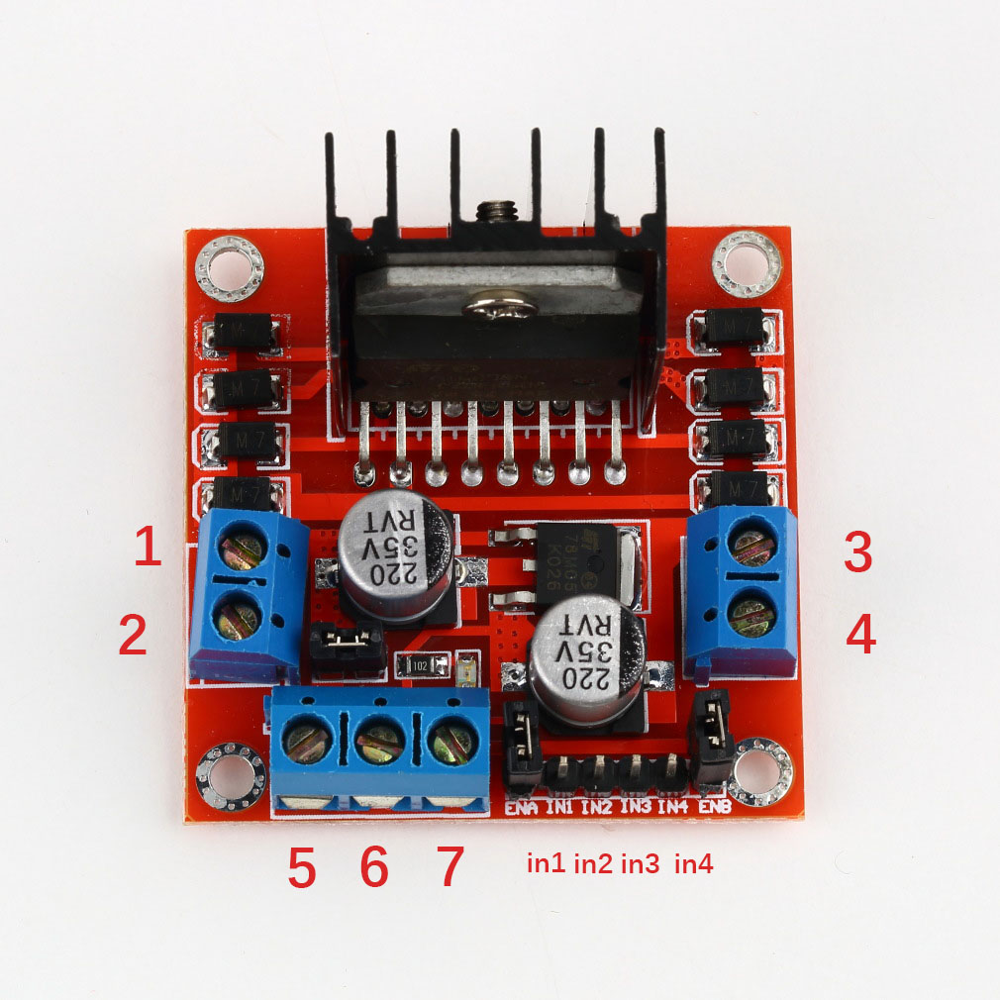
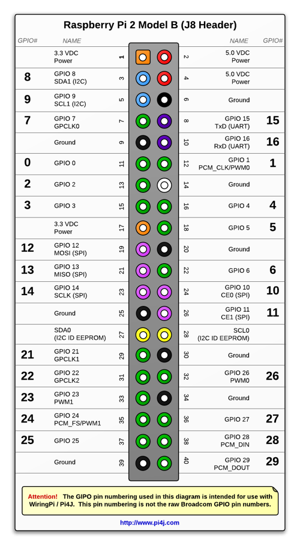

树莓派3B拥有40个针脚，其中8个Ground针脚、4个VDC电源针脚、23个GPIO针脚，每个GPIO针脚都可以输出基本的高、低电平信号，这样树莓派就可以通过这些GPIO针脚来控制继电器，实现相应的功能。对于驱动马达而言，我们需要一块L298N马达驱动板和两个独立电源，其中一个电源为马达供电，另一个为树莓派单独供电。关于供电问题，大致有三种方案：
方案一：使用5V电源为树莓派供电，然后从树莓派的5V电源针脚上取电给L298N即马达供电，树莓派和L298N共地线。这种方法很不可取，因为马达在启动瞬间会因为低电阻和不做功产生一个大的电流，很可能会损坏树莓派。
方案二： 电源给L298N供电，然后从L298N的5V电压输出口取电接在树莓派5V电源针脚上，树莓派和L298N共地线。这种方法在简单情况下可以使用，但是当树莓派驱动的设备多了之后，很容易由于电压不稳而重启。我在为树莓派安装了摄像头后发现，只要马达转动，树莓派就会重启，后来用一个移动电源给树莓派单独供电才解决。
方案三： 使用独立电源分别为树莓派和L298N供电，这是最稳妥的方法，并且以后增加的舵机等设备可以直接从L298N的5V电压输出口接电，而不用担心影响到树莓派。

在上面的L298N驱动板中，1、2和3、4分别接两个马达的正负极，它们是L298N的电流输出口。树莓派的任意4个GPIO针脚接在in1、in2、in3、in4上，可以通过改变4个针脚的高低电平来控制两侧马达的转向，我更建议实际写一个测试程序来看看不同的电平组合会导致马达的转向发生什么样的变化，这样可比枯燥的说明有意思多了。5、6是L298N的电源接入口，5接电源正极，6接电源负极（据说接反会直接烧掉哦），L298N内置了变压模块，当输入电压大于5V时，7可以作为正极稳定输出5V电压，和作为负极的6一起可以为其他设备供电。至于in1、in2、in3、in4两边用跳线帽连接的使能端，可以用它给电机调速，我没有用到，可以忽略。
在接线时要注意，L298N要与树莓派共地线，即6要与树莓派的某个Ground针脚相连，这样输出的电平信号才能构成一个回路，不然是不能控制的。
接线完成后可以写一个小程序测试马达转向与高低电平的组合，我推荐在PC上使用Intellj IDEA或Eclipse导入pi4j库并编写代码，然后复制到树莓派上编译运行，或者将生成的Jar包传到树莓派上直接运行。pi4j项目目录下有很多示例程序，基本涵盖了对GPIO的所有操作，详细的注解使我们很容易弄懂如何使用它，可以参考pi4j官方关于控制GPIO电平的示例 示例。
我在这里也提供一个简单的控制GPIO电平的示例
import com.pi4j.io.gpio.*;
/**
* Created by apqx on 2016/9/11.
*/
public class Demo {
public static void main(String[] args)throws Exception{
GpioController gpio=GpioFactory.getInstance();
//L298N in1
GpioPinDigitalOutput RIGHT_1=gpio.provisionDigitalOutputPin(RaspiPin.GPIO_00,"right_1", PinState.LOW);
//L298N in2
GpioPinDigitalOutput RIGHT_2=gpio.provisionDigitalOutputPin(RaspiPin.GPIO_02,"right_2",PinState.LOW);
//L298N in4
GpioPinDigitalOutput LEFT_1=gpio.provisionDigitalOutputPin(RaspiPin.GPIO_04,"left_1",PinState.LOW);
//L298N in3
GpioPinDigitalOutput LEFT_2=gpio.provisionDigitalOutputPin(RaspiPin.GPIO_03,"left_2",PinState.LOW);
//设置in1为高电平，in2为低电平
RIGHT_1.high();
RIGHT_2.low();
//延时2秒钟
Thread.currentThread().sleep(2000);
//设置in1为低电平，in2为低电平
RIGHT_1.low();
RIGHT_2.low();
//设置in3为高电平，in4为低电平
LEFT_2.high();
LEFT_1.low();
//延时2秒钟
Thread.currentThread().sleep(2000);
//设置in3为低电平，in4为低电平
LEFT_2.low();
LEFT_1.low();
gpio.shutdown();
}
}

一定要注意的是，代码中的GPIO序号对应的是图中两侧的黑体数字，而不是中间的针脚号！
在树莓派上新建一个文件
vim Demo.java
并将以上代码复制到Demo.java文件中，编译
pi4j -c Demo.java
运行
pi4j Demo
这时应该可以看到两个马达依次转动。